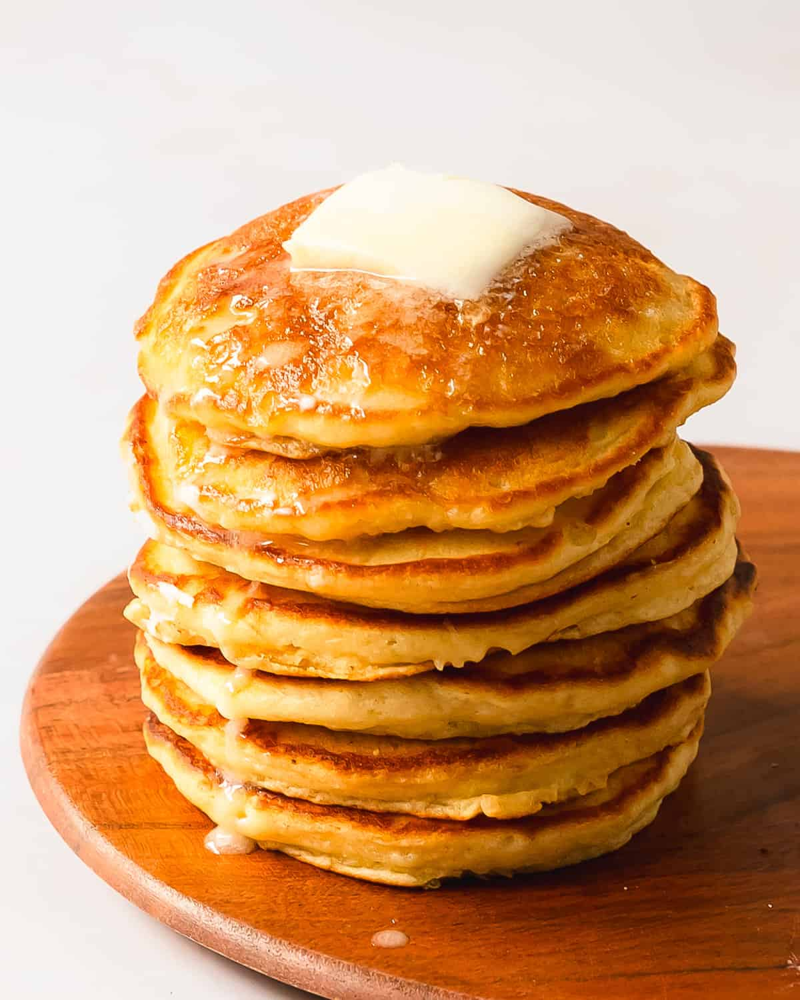

Home
Pancakes

Description
These light, fluffy, and golden pancakes are perfect
for breakfast or brunch. Made with simple ingredients, they cook up quickly and pair beautifully with butter, syrup, fresh fruit, or your favorite toppings.
Ingredients
For the Pancake Batter
- 1 ½ cups (190g) all-purpose flour
- 3 ½ teaspoons baking powder
- 1 teaspoon salt
- 1 tablespoon sugar
- 1 ¼ cups (300ml) milk
- 1 egg
- 3 tablespoons (45g) melted butter (plus extra for cooking)
- 1 teaspoon vanilla extract (optional)
Optional Toppings
- Maple syrup
- Butter
- Fresh fruit (bananas, strawberries, blueberries)
- Whipped cream
- Chocolate chips